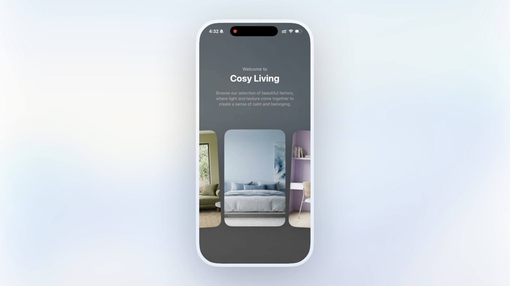

Here are some of my interaction experiments across web, mobile, and XR. I often create prototypes like these when I'm learning a new tool, or when I just want to make something cool.
A prototype app showcasing interiors in a carousel of cards that loops infinitely. Tap or slide a card up to expand it for more info. I really focused on making the interactions feel buttery smooth with this. View on Twitter.
Another carousel, this one focused on the card scaling and fading behaviour, and providing sliders to make it easy to dial in the right values in the prototype.View on Twitter.
A simple VisionOS-inspired weather widget. Each individual rain drop has a depth for realistic parallax. View on Twitter.
What if the dark mode toggle functioned like a light pull cord with full physics? This one is really fun to play with! View on Twitter.
Exploring what a Mixed Reality Spotify widget that lives on your desk could look like. Built in Unity. View on Twitter.